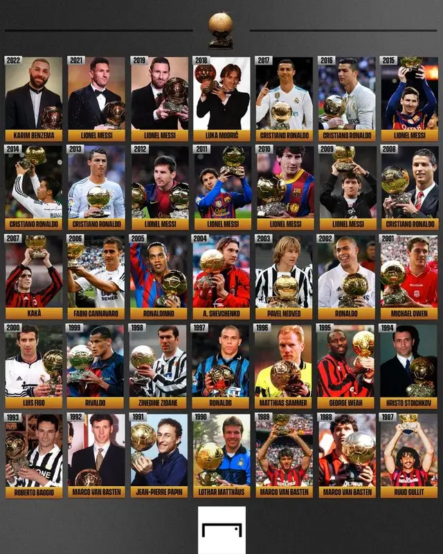

Ganadores del Balón de Oro
Lista de Ganadores del Balón de Oro
| Año |
Ganador |
| 1956 | Stanley Matthews |
| 1957 | Alfredo Di Stéfano |
| 1958 | Raymond Kopa |
| 1959 | Alfredo Di Stéfano |
| 1960 | Luís Suárez |
| 1961 | Omar Sívori |
| 1962 | Josef Masopust |
| 1963 | Lev Yashin |
| 1964 | Denis Law |
| 1965 | Eusébio |
| 1966 | Bobby Charlton |
| 1967 | Flórián Albert |
| 1968 | George Best |
| 1969 | Gianni Rivera |
| 1970 | Gerd Müller |
| 1971 | Johan Cruyff |
| 1972 | Franz Beckenbauer |
| 1973 |
Johan Cruyff |
| 1974 |
| 1975 | Oleg Blokhin |
| 1976 | Franz Beckenbauer |
| 1977 |
Kevin Keegan |
| 1978 |
| 1979 |
Karl-Heinz Rummenigge |
| 1980 |
| 1981 | Karl-Heinz Rummenigge |
| 1982 | Paolo Rossi |
| 1983 |
Michel Platini |
| 1984 |
| 1985 |
| 1986 | Igor Belanov |
| 1987 | Ruud Gullit |
| 1988 |
Marco van Basten |
| 1989 |
| 1990 | Lothar Matthäus |
| 1991 | Jean-Pierre Papin |
| 1992 | Marco van Basten |
| 1993 | Roberto Baggio |
| 1994 | Hristo Stoichkov |
| 1995 | George Weah |
| 1996 | Matthias Sammer |
| 1997 | Ronaldo |
| 1998 | Zinédine Zidane |
| 1999 | Rivaldo |
| 2000 | Luís Figo |
| 2001 | Michael Owen |
| 2002 | Ronaldo |
| 2003 | Pavel Nedvěd |
| 2004 | Andriy Shevchenko |
| 2005 | Ronaldinho |
| 2006 | Fabio Cannavaro |
| 2007 | Kaká |
| 2008 | Cristiano Ronaldo |
2009 |
Lionel Messi |
| 2010 |
| 2011 |
| 2012 |
| 2013 |
Cristiano Ronaldo |
| 2014 |
| 2015 | Lionel Messi |
| 2016 |
Cristiano Ronaldo |
| 2017 |
| 2018 | Luka Modrić |
| 2019 | Lionel Messi |
| 2020 | No se otorgó |
| 2021 | Lionel Messi |
| 2022 | Karim Benzema |
| 2023 | Lionel Messi |
| 2024 | Rodri |
